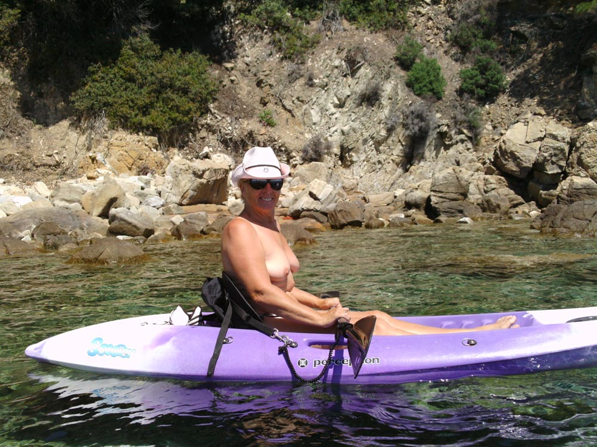
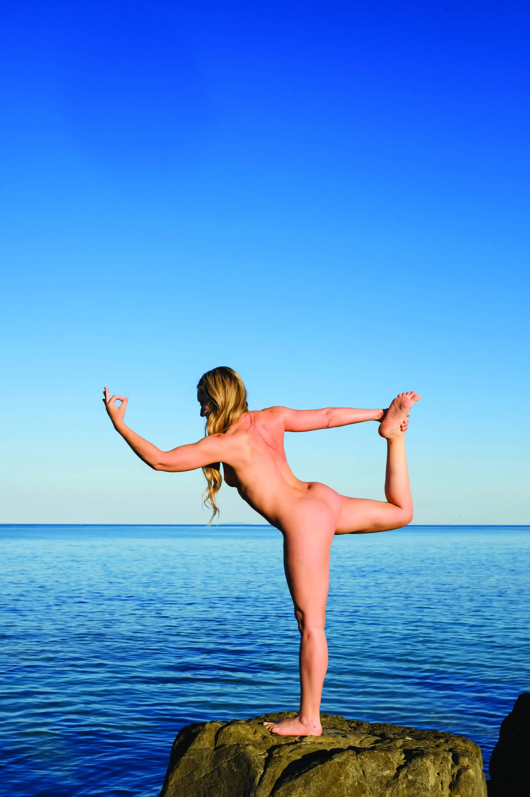
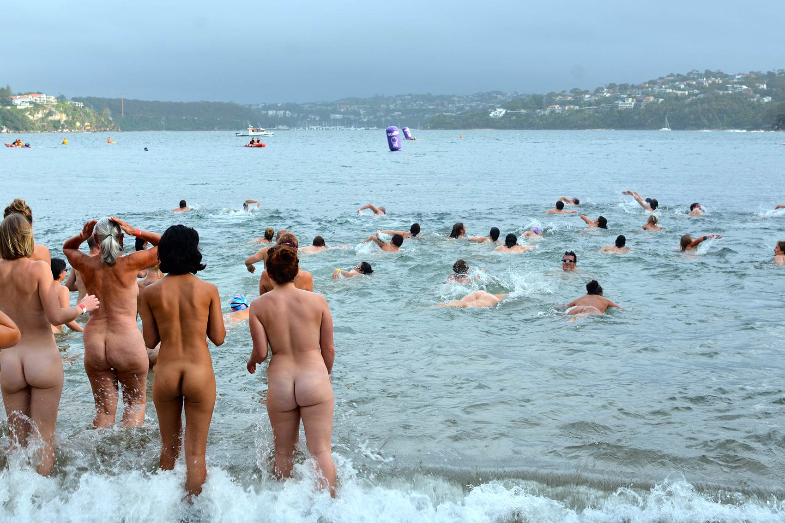
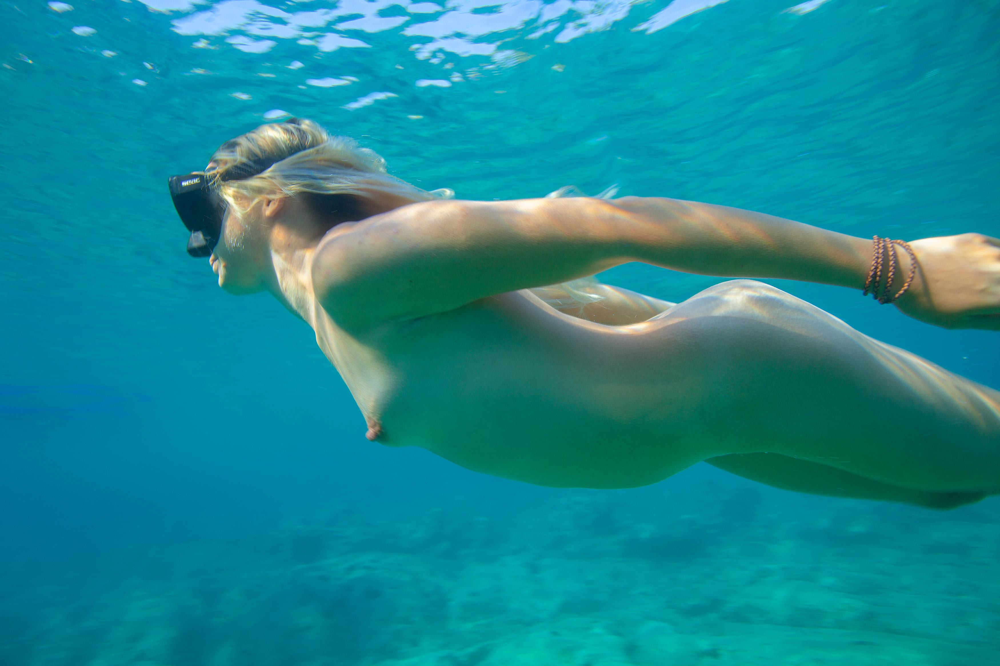
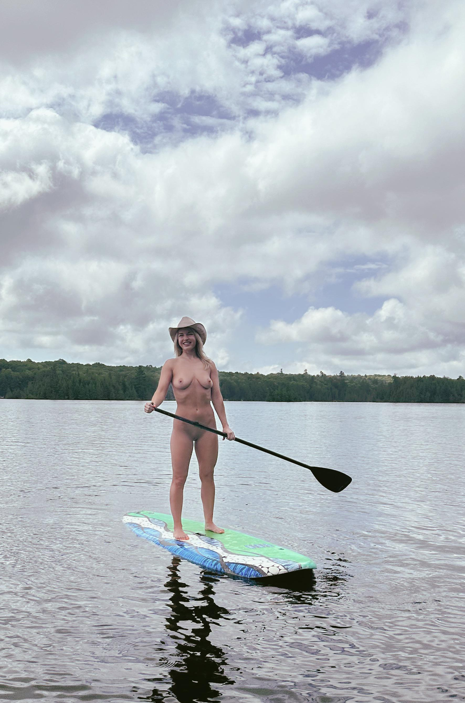
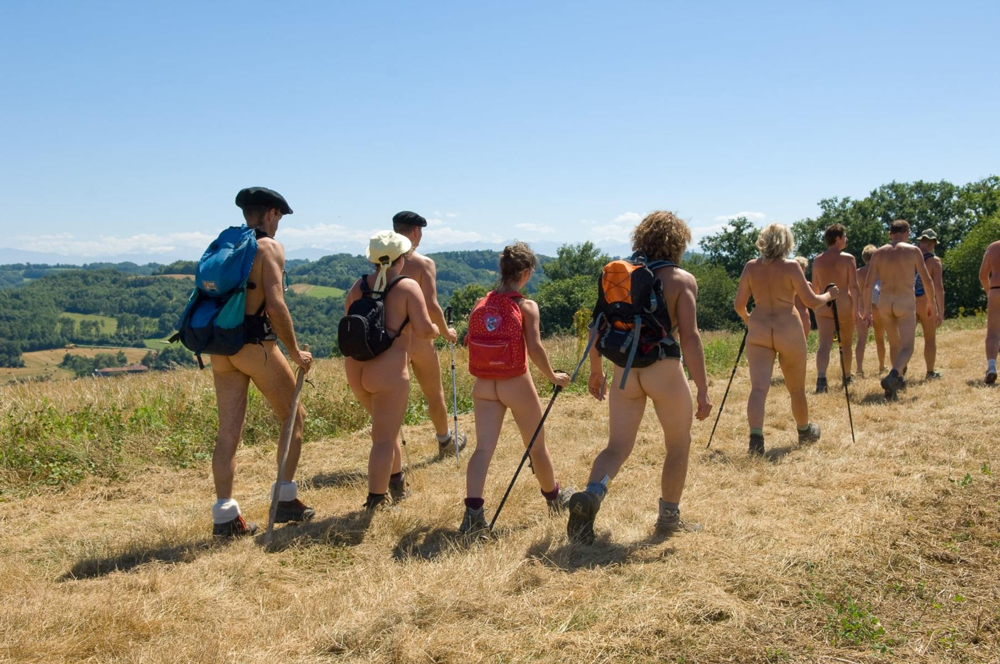
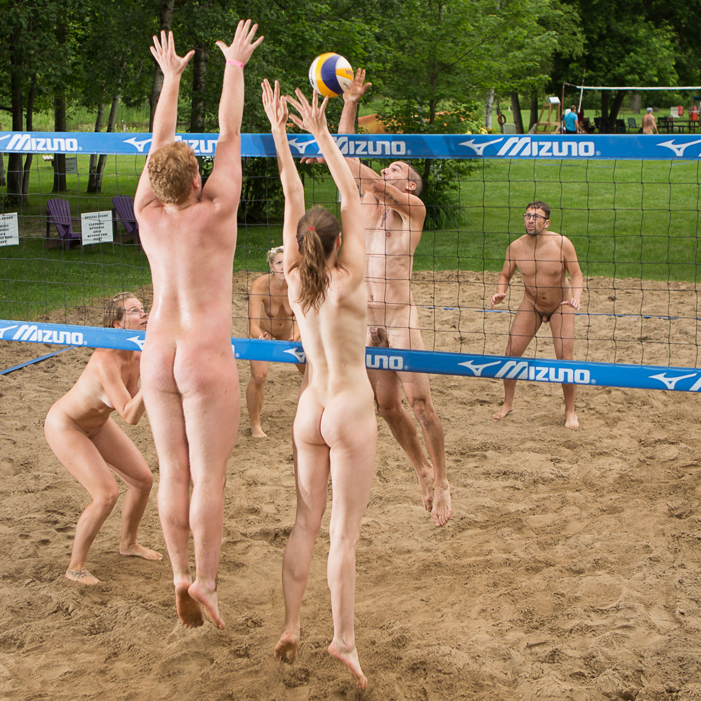
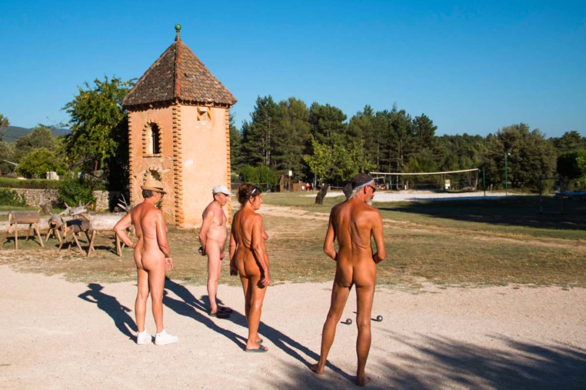

Base del espacio
Principios
Consentimiento explícito, privacidad total, respeto absoluto, normas claras y grupo reducido.
- Consentimiento claro.
- Respeto mutuo.
- Comunicación previa.
- Bienestar antes que rendimiento.
Libertad, respeto y conexión genuina con la naturaleza. Una propuesta elegante, filosófica y completamente diferente.
Nómada Naturista es una línea puntual, diferenciada y tranquila: naturaleza, privacidad, consentimiento, grupo reducido y cero sexualización. No es la parte extrema del catálogo; es una forma de bajar el ruido y vivir el entorno con respeto.
La línea naturista de Nómada Extremo no es un reclamo ni un experimento. Es una extensión natural de los valores del fundador: libertad de ser, respeto al cuerpo, integración plena con el entorno y ausencia de artificios innecesarios.
Esta propuesta se estructura como una línea puntual y diferenciada, programada con frecuencia mensual o bimestral, en entornos seleccionados específicamente y con una gestión cuidadosa de todos los aspectos relacionados con la privacidad, el consentimiento y la convivencia.
No es una actividad de iniciación espontánea ni está integrada en el catálogo general. Quien participa sabe exactamente qué va a encontrar, ha dado su consentimiento informado y comparte los valores del espacio.
Las actividades de esta línea son, por diseño, de baja complejidad técnica. El protagonista es el entorno y la experiencia de conexión. No la adrenalina.

Travesías tranquilas por calas seleccionadas. Mar en calma, sin motor, sin ruido.

Sesiones de yoga exterior y meditación guiada en espacios naturales privados.

Baño en aguas tranquilas y calas vírgenes. Sin más. Sencillo y perfecto.

Exploración de fondos mediterráneos poco profundos con máscara, tubo y aletas.

SUP relajado en aguas calmadas. Equilibrio, sol y silencio.

Rutas cortas e interpretativas en entornos seleccionados por su privacidad y belleza.

Partidos informales y espontáneos cuando el grupo y el espacio lo permiten.

Un clásico para los momentos de pausa. Conversación, espacio y naturaleza.
La propuesta naturista se programa con una frecuencia de uno o dos días al mes, en entornos seleccionados por su privacidad y acceso controlado. Los grupos son pequeños —entre 6 y 12 personas— para garantizar la calidad de la experiencia y la coherencia del espacio compartido.
La participación requiere mayoría de edad, registro previo, lectura y aceptación de las normas del espacio, consentimiento informado y confirmación expresa. No se acepta participación espontánea no registrada.
Solicitar información privada →Una línea tranquila, respetuosa y diferenciada para vivir la naturaleza con libertad, privacidad y consentimiento claro.
Nómada Naturista no es una actividad extrema ni una experiencia improvisada. Es un espacio cuidado, con normas claras, grupos pequeños y actividades suaves, diseñado para disfrutar del entorno natural desde el respeto, la calma y la confianza.
Consentimiento explícito, privacidad total, respeto absoluto, normas claras y grupo reducido.
Actividades suaves y respetuosas: kayak, SUP tranquilo, snorkel, natación en cala, senderismo consciente, yoga, movilidad, petanca, baño al amanecer y relajación junto al mar.
El objetivo no es demostrar nada, sino bajar el ritmo y conectar con la naturaleza.
No se plantean actividades técnicas de alto riesgo, saltos extremos, ferratas, barrancos técnicos, zonas concurridas ni situaciones sin privacidad o consentimiento claro.
La prioridad es la calma, la privacidad y la seguridad del grupo.
Cada persona decide su nivel de participación y su ritmo.
No se permite grabar ni fotografiar a ninguna persona sin autorización expresa, clara y previa.
La participación requiere información previa, aceptación de normas y confirmación voluntaria.
Experiencias puntuales, grupo pequeño, registro previo, punto de encuentro discreto, briefing de convivencia, actividad suave y cierre tranquilo.
Se revisan entorno, accesos, temperatura, hidratación, protección solar, calzado, privacidad y estado general del grupo.
Clara Vidal coordina el briefing, la privacidad, el ritmo y la atención inmediata ante cualquier incomodidad, sin dirigir la experiencia de forma invasiva.
No busca exhibición, sino presencia. No busca rendimiento, sino calma. Es una forma sencilla, consciente y libre de volver al cuerpo, al mar, al sol y al entorno.
Cada pack naturista está diseñado con el mismo nivel de cuidado que el resto del catálogo, y tratado con la elegancia y el respeto que esta filosofía merece.
Kayak tranquilo + Snorkel en cala + Meditación en roca
Cala privada, jornada de mañana, grupo reducido (máx. 8 personas). El silencio del mar como protagonista.
Senderismo en entorno privado + Petanca + Almuerzo
Ruta suave por terreno accesible, alejada de zonas públicas. Filosofía de contacto total con la naturaleza.
SUP en aguas tranquilas + Snorkel + Yoga en roca
Equilibrio entre movimiento y calma. El agua como espejo y el cuerpo como herramienta de conexión.
Yoga al alba + Natación en cala + Desayuno saludable
El momento más silencioso del día, en una cala sin nadie. La experiencia más espiritual y minimalista del catálogo.
Programa completo: senderismo + kayak + voleibol + almuerzo
El pack más completo de la línea naturista. Jornada entera con variedad de actividades suaves y posibilidad de convivencia.
Meditación + Baño en naturaleza + Círculo de conversación
La experiencia más filosófica y contemplativa. Para quienes buscan conexión profunda con el entorno y con ellos mismos.
Kayak al amanecer + Baño libre en cala + Desayuno mediterráneo
La cala más reservada del litoral de Águilas, antes de que llegue nadie. El sol naciendo sobre el mar desde el agua. Un desayuno mediterráneo al regreso. La experiencia más silenciosa del catálogo.
Snorkel de fondo + Natación libre + Relajación en roca
El fondo del mar sin traje, sin neopreno, sin distancias artificiales entre la piel y el Mediterráneo. La experiencia más directa de conexión con el agua. Solo para quienes quieran sentir de verdad.
Ruta litoral en bici + Cala privada + Meditación en entorno natural
El litoral de Águilas en bici hasta una cala que solo se llega pedaleando. Un rato de meditación con los pies en la arena, el mar delante y el silencio de la costa natural. La aventura más consciente.
Snorkel en cala · Natación libre · Meditación al atardecer
Tarde en cala privada de Calabardina o Cuatro Calas. Conexión directa con el mar, el sol y la roca. La experiencia mediterránea más auténtica.
SUP al amanecer · Yoga en roca · Fruta y hidratación saludable
La combinación más equilibrada de movimiento y calma. El mar al amanecer tiene una energía que no se puede describir.
Senderismo suave · Bañe libre en cala · Círculo de conversación · Almuerzo
Una jornada completa en entorno natural. Caminamos, nos bañamos, comemos y hablamos. La experiencia naturista más social y completa del catálogo.
📋 Información importante: Para participar en cualquier experiencia naturista, es necesario ser mayor de edad, completar la Ficha de Participación, aceptar las normas de convivencia y confirmar el consentimiento informado. No se permiten fotografías sin autorización expresa, comportamientos sexualizados, exhibicionismo ni presión sobre otras personas. El equipo puede expulsar a quien incumpla las normas. Línea diferenciada dentro del marco académico general del proyecto.
Muchas personas que practican el naturismo de forma consciente y respetuosa describen beneficios percibidos que van más allá del movimiento físico. Lo que sigue no son afirmaciones médicas — son experiencias descritas por quienes la viven dentro de una práctica sana y libre.
✦ Beneficios percibidos. No constituyen consejo médico ni garantía de resultado. Cada vivencia es única.
Calma mental y reducción del estrés percibido en contacto directo con la naturaleza sin barreras artificiales entre el cuerpo y el entorno.
El contacto físico directo con el mar, el aire, la roca y el sol descrito como una forma de conexión auténtica e íntima con el entorno natural.
Relajación profunda, desconexión del artificio cotidiano y una sensación de presencia total en el momento. Sin capas que medien.
Una relación más natural y amable con el propio cuerpo, alejada de estereotipos y juicios externos. Percibida por quienes la practican regularmente.
El sol, el agua y el viento en la piel como experiencia sensorial más completa, vívida y presente con el entorno.
Vínculos más honestos y una sensación de autenticidad compartida dentro de una comunidad respetuosa.